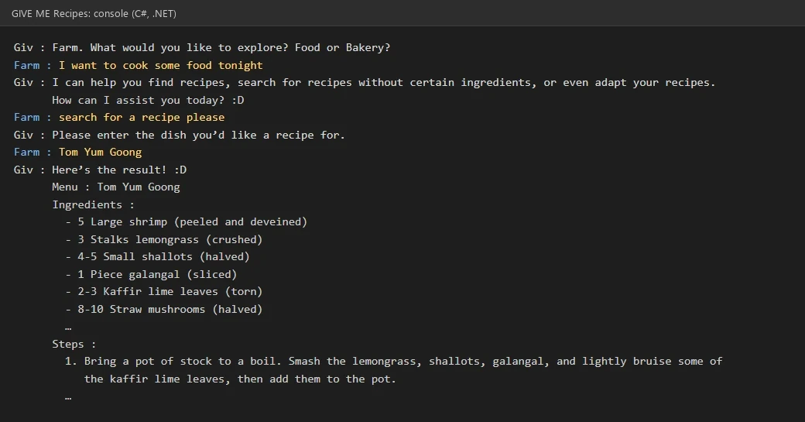

GIVE ME Recipes
A recipe chatbot (C# console app) that doesn’t make you pick from a menu: it reads the sentence you type and picks out key words to understand what you want.
In short: A recipe chatbot I designed and coded entirely myself in C#; it understands freely typed sentences by picking out key words — course project.
- Year
- Year 2, Term 1 (2024)
- Course
- MDT211
- Team / role
- System design and all the code by me; friends collected the recipes
- Tools
- C# · .NET console app
- Status
- course project

Problem
I didn’t want a chatbot where you pick from a fixed list of options. The user should be able to type a normal sentence and still get what they asked for.
What I decided
- Key words, not menus. Each answer is read as free text and checked for key words: “food” or “bakery” picks the recipe type; “search”, “ingredient” or “adapt” picks what to do.
- Leave out what you don’t have. You type the ingredients to leave out as a comma list, and the bot returns a version of the dish that contains none of them — some dishes are stored in more than one version for this.
- Adapt a recipe. Asking about a technique, equipment or a substitute (“instead”) opens a set of tips — for example what to use instead of fish sauce, or how to sift flour.
- Feedback. After each answer the bot asks for comments; later in the same session, a recipe that has comments is shown with them.
Result
A working console chatbot with food and bakery recipes (for example Tom Yum Goong, Crab Fried Rice, Egg Tart and Crème Brûlée). Feedback is kept only while the program is running.
My role vs AI
Me: I designed the system and wrote all the code myself in C# — no AI. Friends: collected the recipes and put them into the format my code reads.